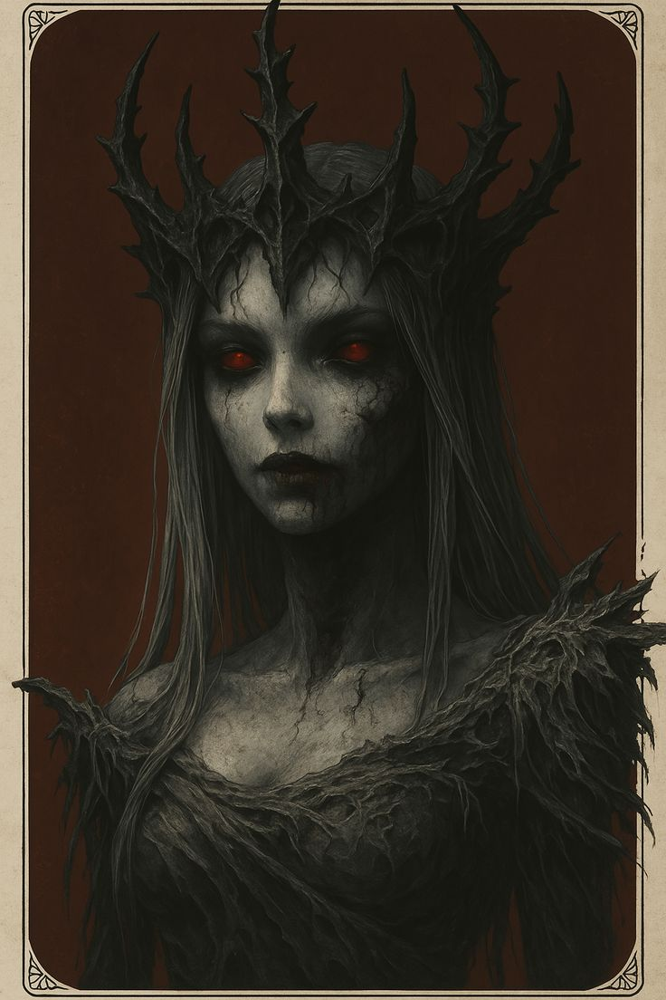

História / Mitos
• Irmã gêmea de Uriel, tem uma rixa com seu irmão por ele acreditar que tem poder sobre ela
• Foi enganada por Kalymos, concedendo imortalidade a um homem. Por conta disso, deixou de confiar em homens, permitindo apenas que mulheres subam na hierarquia
Poderes
• Guiar almas
• Testemunho final
• Nem antes, Nem depois
Conhecido por
• Cuidar das almas
• Fazer a passagem
• Lembrar dos que já foram esquecidos
Exige
• Respeitar os mortes
• Cumprir ritos fúnebres
• Aceitar o fim
Não tolera
• Profanação dos mortos
• Esquecer os que se foram
• Negação do ciclo
Classes
• Clérigo
• Ranger
• Guerreiro
Cultuado por
• Humanos
• Elfos
• Drow